Ch 6: The Life Cycle of a Domain Object
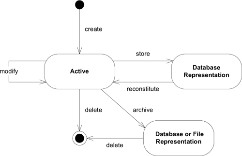
Aggregates
假設我們要從資料庫刪除一個 Person 物件，那麼此人的姓名、出生日期、工作描述都應該被刪除。但是地址需要刪掉嗎？有可能有其他 Person 物件還需要參考到這個地址。不過如果沒有呢？那地址就會越累積越多。
Aggregate 是一個相關物件的群集，有一個 root 與邊界。外部物件只能引用 root。邊界內的物件，可以互相引用。
範例: 汽車
汽車是一個有「global identity (全域識別碼)」的 Entity。識別碼用以識別世界上每一輛汽車個體，是 Aggregate root。
輪胎，有「里程數」與「磨損度」屬性。如果我們會關心某個輪胎被裝在哪台汽車上面，就需要將輪胎視為 Entity，給予識別碼。不過，我們並不會關心特定輪胎被安裝在哪台汽車上。輪胎從汽車拆除後，我們也不會關心他後續的存在。我們只會搜尋汽車，透過汽車了解其輪胎狀況。
引擎有自己的序號，有時候會獨立追蹤。因此，引擎可以是 Aggregate root。
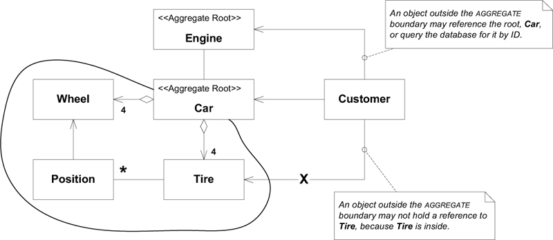
可以被外部用識別碼查詢，就是 Aggregate root。
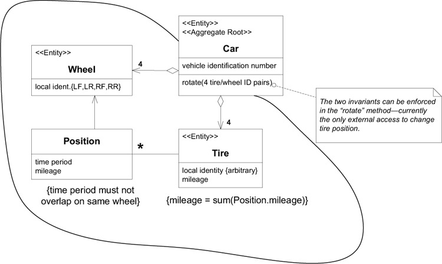
invariant 是 Aggregate 內的物件必須遵守的規則。如圖中的
{time period must not overlap on same wheel}{mileage = sum(Position.mileage)}
Aggregate 與 Aggregate 之間不應求即時同步，可以透過 event 或 batch 等機制更新。
Aggregate 的規則:
- Root Entities 有 global identity (全域唯一識別)
- 範例: 若
Car的車號是 ABC-123，那麼應用程式不會有另外一台車也是 ABC-123。
- 範例: 若
- Root Entities 負責檢查 invariant
- 範例:
Car必須檢查{time period must not overlap on same wheel}與{mileage = sum(Position.mileage)}
- 範例:
- 邊界內的 Entities 有 local identity (邊界內唯一識別)
- 範例:
CarABC-123 的 LFWheel只在 ABC-123 裡面唯一。另一台車，假設 DEF-456，也有 LFWheel，但是這兩個Wheel是不同的。
- 範例:
- Aggregate 外，只能參考 Root Entities，不能參考內部的物件
- 內部物件可以傳遞到外部，但是外部不能保留對內部物件的參考
- 範例: 外部只能保留
Car的參考，不能保留Wheel,Tire,Position的參考
- Aggregate root 可以透過資料庫查詢。其他內部物件必須透過 root 走訪得到。
- 範例: 可以查詢資料庫車號 ABC-123 得到
Car，但是不能查詢Wheel得到Car。
- 範例: 可以查詢資料庫車號 ABC-123 得到
- Aggregate 內部物件可以保留其他 aggregate root 的參考。
- 刪除操作必須一次性刪除整個 Aggregate。
範例: 採購訂單的完整性
Domain model
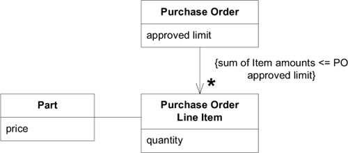
假定資料庫儲存了一筆 Purchase Order 的情況。
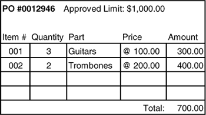
Object diagram
操作期間忽略其他資料庫變化造成的問題
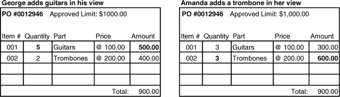
- George 修改 Guitars 的 Quantity 為 5，更新後 Total 為 900，滿足 invariant，予以更新。
- Amanda 修改 Trombones 的 Amount 為 600，更新後 Total 為 900 滿足 invariant，予以更新。
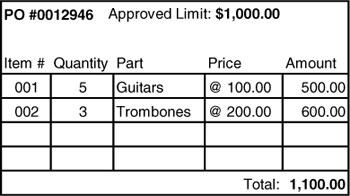
但是這兩筆資料更新後，造成 PO 的 Total 變成 1100，超過 PO 的 approved limit 1000。
一次鎖定整筆 PO 進行更新
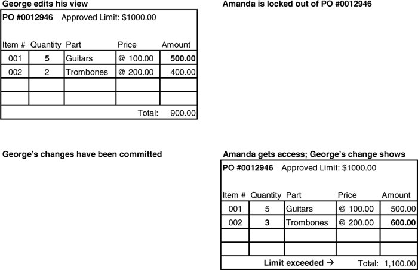
- George 修改 Guitars 的 Quantity 為 5，更新後 Total 為 900，滿足 invariant，予以更新。
- 因為 George 進行修改，鎖定整筆 PO，Amanda 要修改需要排隊等 George 完成。
- Amanda 修改 Trombones 的 Amount 為 600，更新後 Total 為 1100 違反 invariant，不予更新。
如果 George 修改 Guitars 時，有人提高 Guitars 的 Price，是不是也會可能違反 invariant。因此，可能也需要考慮在鎖定 PO 時，也鎖定 Part。
不過，過度鎖定會造成複雜的競爭問題，如下：
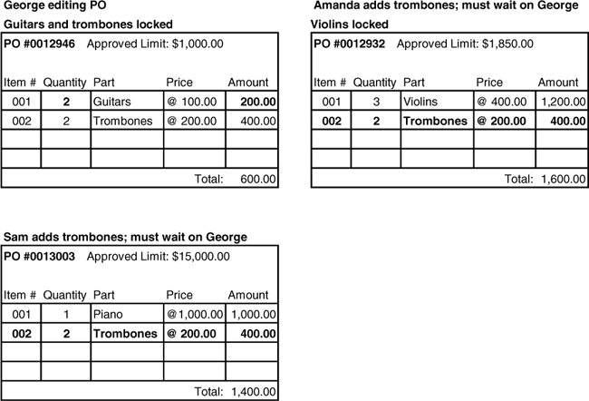
- George 修改 PO #0012946。Guitars, Trombones 都被鎖定。
- Amanda 要修改 PO #0012932，所以鎖定 Violins。然後要把 Trombones 加到 PO，但是 Trombones 被鎖定，所以 Amanda 要等 George 完成。
- Sam 要修改 PO #0013003，所以鎖定 Piano。然後要把 Trombones 加到 PO，但是 Trombones 被鎖定，所以 Sam 要等 George 完成。
接著，George 要把 Violins 加到 PO，但是 Violins 被 Amanda 鎖定，所以 George 要等 Amanda 完成。
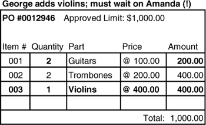
結果是，三個人都在相互等待。
加入業務知識
- Parts 會在多個 PO 使用，會產生 high contention。
- 修改 Parts 的機會低於修改 PO。
- 修改 Parts 的 Price 可以不必影響已存在的 PO。
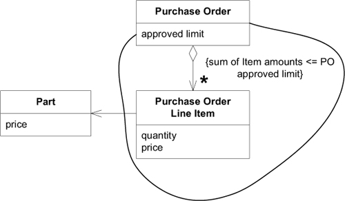
Purchase Order Line Item 中保留了一份 price，它是填寫 PO 時的價格，而非最新價格。
Aggregate 強迫 Purchase Order 與 Purchase Order Line Item 的新增與刪除。而 Part 的新增與刪除是獨立的。
Factory
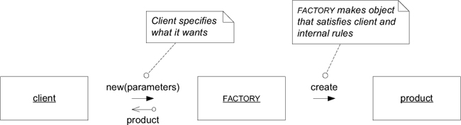
Factory 的實作手段: (GoF Design Patterns)
1. Factory method
2. Abstract factory
3. Builder
整個 Aggregate 通常由 Factory 建立，並回傳 Aggregate root。
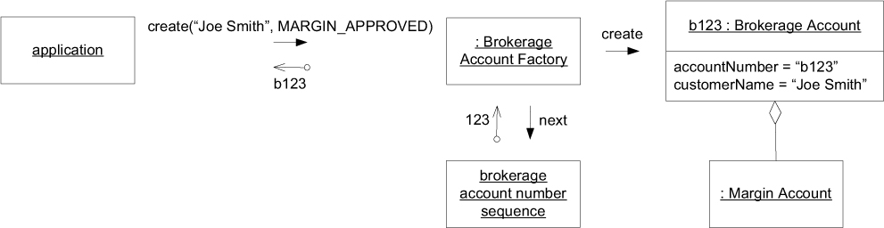
在既有的 Aggregate 中新增元素
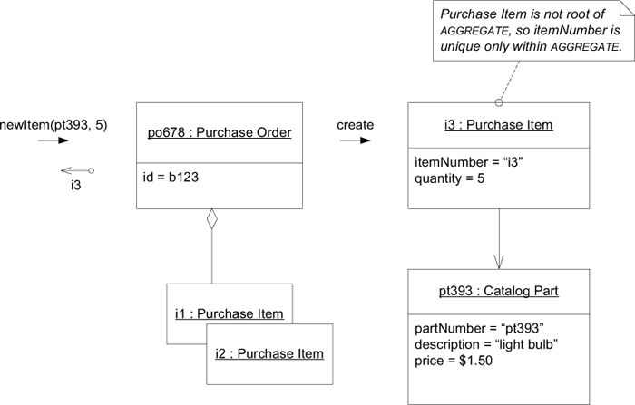
在 Aggregate root 增加 Factory method，用以新增元素。
但是，Factory method 產生的元素可以不必屬於 Aggregate。
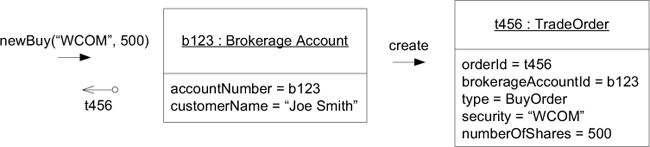
TradeOrder 不屬於 Brokerage Account 的 Aggregate。但是讓 Brokerage Account 產生 TradeOrder 是很自然的事情。因為
TradeOrder建立需要Brokerage Account的資訊。Brokerage Account控制交易是否允許。
重建 Aggregate
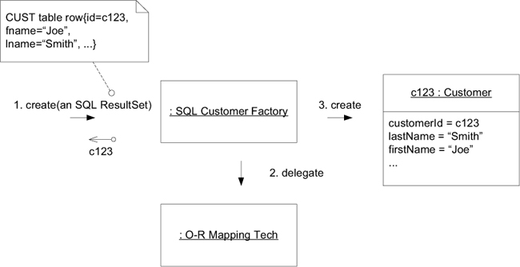
CUST: customer?
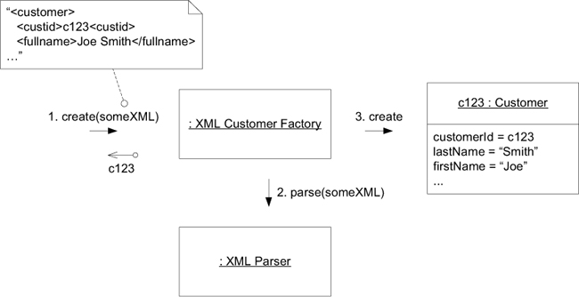
Repository
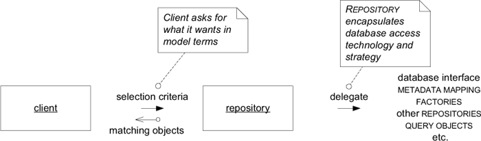
寫死的查詢，只接收固定參數的查詢。
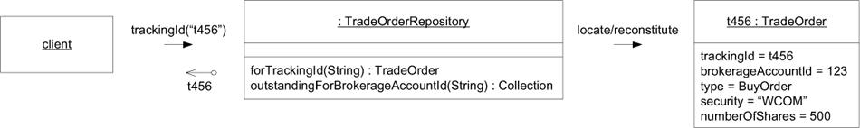
Specification-based 的查詢，讓 repository 更通用化。
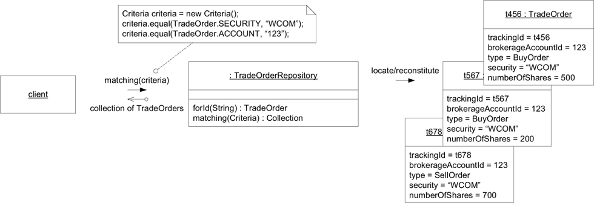
Repository 的實作
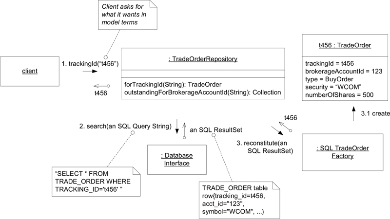
理想的 Repository 向 client 隱藏所有細節，無論資料是存在物件資料庫、關聯式資料庫、或是在記憶體中。
Factory v.s. Repository
Factory 負責建立物件。
Repository 負責保存物件、查詢物件、刪除物件。即使物件被保留在外部媒介(資料庫等)，也應該讓 client 覺得物件就是在記憶體中。
Repository 可以委託(delegate) Factory 來建立物件。
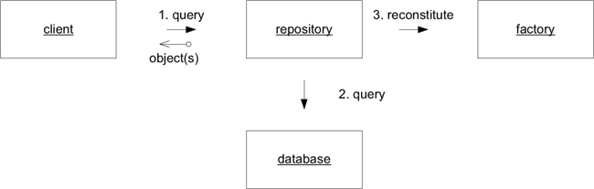
Client 從 Factory 建立物件後，需要知道應透過 Repository 保存物件。
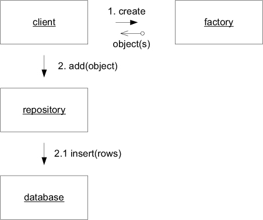